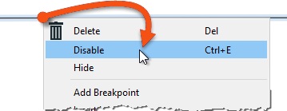
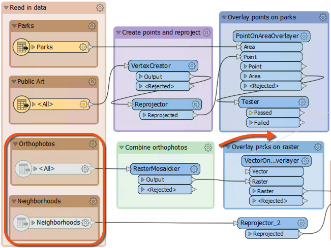

After completing this lesson, you’ll be able to:
A lot of testing will occur when developing a workspace incrementally or making edits to a structured workspace. Each time a change is made, the author will wish to test the change, and this process of change/test repeats itself.
To effectively and efficiently carry out this process, several tools are available in FME Workbench.
The first set of tools is for inspecting data as it changes. The second set of tools defines which workspace parts need to be tested.
A partial run occurs when you run only a section of a workspace. One way to do this is to disable objects in the canvas to only run certain enabled sections. Another method is to use the partial runs buttons available when feature caching is enabled.
Your technique will depend on how large the workspace is and how much of it you need to run. You may use one technique or the other - or you may use both!
The technical aspect of partial runs is covered in other courses (see View Data). However, using partial runs is an essential part of workspace testing. You should use partial runs to develop your workspace incrementally, testing each new section to ensure it works.
A partial run helps avoid re-reading data from its source, especially from a slow, remote location like a web service. Creating a cache can help increase the development of your workspace.
Finally, caches can be saved with the workspace when it is saved as a template (File > Save As Template, enable Include Feature Caches). That means the workspace can be re-run using the caches from a previous session or even from another author!
Starting in FME 2021.0, when you have feature caches in your workspace, you can browse unique values to make filling in transformers easier. The first step is to ensure you have feature caches:
Then, add a Tester, TestFilter, AttributeExposer, or any other transformer that uses test clauses. The AttributeManager is also supported. Once connected, open the parameters. In the parameters, select the Left Value attribute. For this example, I’m using Common Name. Then select your Operator.
To retrieve the cached attributes, click on the drop-down arrow for Right Value, then select Cached Values. A drop-down list will be available if only a few values exist for the attribute. If there are lots of values, a popup list will appear.

Then, select the value you want to test for.

Once the value is selected, click OK to create another test or click OK again to accept the parameters.
You can continue to build your workspace as usual. To use this feature again later in the workspace, remember to run with feature caching up to the transformer you add.
If designed correctly, a large workspace should comprise small sections. Disabling connections to all other components lets you isolate a section for testing.
An object (connection, transformer, or feature type) is disabled by right-clicking it and choosing the option to Disable (or selecting it and using the shortcut Ctrl+E):

A disabled connection is rendered inoperative in much the same way as if it had been deleted, and no features will pass through. The same disabling can be done to other canvas objects, such as transformers and feature types. Even a reader/writer can be disabled through the Navigator window.
Here, an author has disabled two connections (both from the Tester's Passed port) and two feature types:

With that setup, the top part of the workspace will operate up until (and including) the Tester. The bottom portion will not run at all. No data will emerge from the disabled feature types, and no data is passed to it from the Tester.
With caching turned on, the author can inspect part of the workspace without running the entire translation. This feature is a significant advantage when (like here) the disabled section takes up most of the overall processing time.